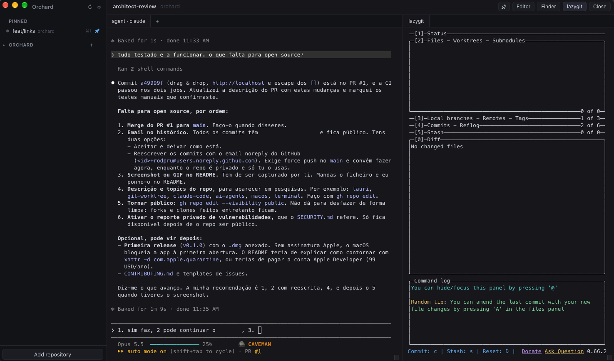

01
You wait.
An agent takes minutes per task. One at a time, you spend the day watching a terminal.
open source · macOS · Linux · MIT
Run coding agents in parallel git worktrees, on macOS and Linux.
Every task gets its own git worktree, with a coding agent working in it, extra shells, lazygit alongside, and the branch's PR and CI status. A sidebar shows which agents are busy, which have news, and which need you. Everything runs locally.

The problem
01
An agent takes minutes per task. One at a time, you spend the day watching a terminal.
02
Run several in the same folder and they edit the same files and break each other's work.
03
Worktrees fix the collisions. By hand, you create them, open terminals, launch agents, track who finished, open PRs, clean up.
→ Orchard puts all of that in one window.
How it works
Pick a new or existing branch. Orchard creates the git worktree.
Your agent CLI launches inside that worktree — Claude Code, Codex, opencode, or anything that runs in a terminal.
See at a glance which agents are busy, have new output, or rang the bell.
Review the diff in lazygit, then push and open the PR from the app. Remove the worktree when you're done.
Features
Create a git worktree on a new or existing branch. Agents run in parallel without file conflicts.
Launch Claude Code, Codex, opencode or any CLI inside the worktree. No lock-in.
Open more terminal tabs to run tests or a dev server without stopping the agent.
A lazygit panel in every worktree. Review diffs and commit without leaving the window.
See the branch's PR and its checks — passed, failed, pending — via gh.
Push and open the pull request from the app. From agent to PR in one click.
Busy, new output, bell. Know who needs you without checking every terminal.
Pin worktrees, switch with ⌘1…⌘9 (Ctrl+Shift+1…9 on Linux), open in your editor or file manager, or run orchard .
drag a file into a terminal to paste its path · safe cleanup: asks before deleting the local branch, never deletes the remote · English & Portuguese UI
Bring your own agent
It starts whatever CLI you already use, inside the right worktree. Tested with Claude Code. Works with any terminal agent, for example:
~/demo-repo/.worktrees/feature-login $ claude # or codex · or opencode · or ./my-agent ● busy feature/login ● new fix/rate-limit ○ idle review/pr-42
Local & open source
gh talks to GitHub with the login you already have. The app itself only checks GitHub Releases for signed updates, and you can turn that off.
Nothing to sign up for. Nothing phoning home.
A native app built with Tauri, Rust and React. Read the code, fork it, send a PR.
Requirements & install
On macOS, Homebrew puts Orchard in /Applications and installs lazygit and gh with it. On Debian and Ubuntu, a .deb adds it to your app launcher and apt brings gh, plus lazygit on Debian 13 and Ubuntu 25.04+. Both put orchard on your PATH. You'll also need:
macOS, or Linux: Ubuntu 22.04+ / Debian 12+, x86_64lazygit, if your distribution doesn't package it (install guide)gh signed in with gh auth loginClaude CodeOrchard is not notarized by Apple. The cask removes the quarantine flag, so macOS opens the app without a Gatekeeper prompt. Install it only if you trust the tap, or build it from source. Other Linux distributions can build from source too.
# install Orchard on macOS (brings lazygit and gh) $ brew install --cask rodpru/tap/orchard # or on Debian / Ubuntu $ curl -fLO https://github.com/rodpru/orchard/releases/latest/download/orchard_amd64.deb $ sudo apt install ./orchard_amd64.deb # sign in to GitHub once $ gh auth login # then, from any repo $ orchard .